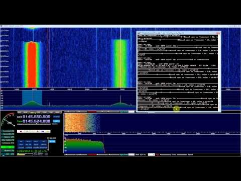
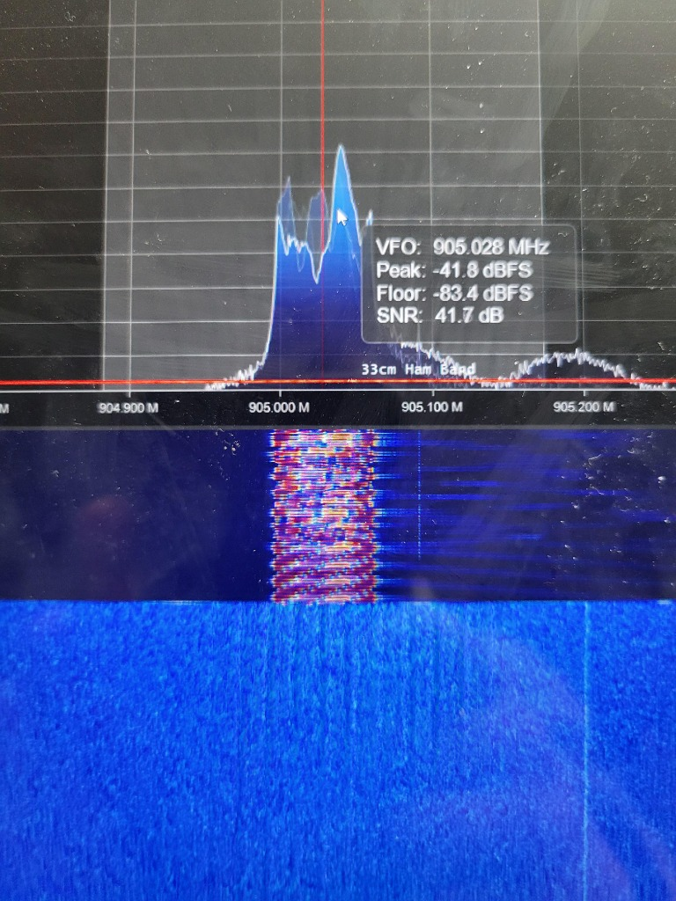
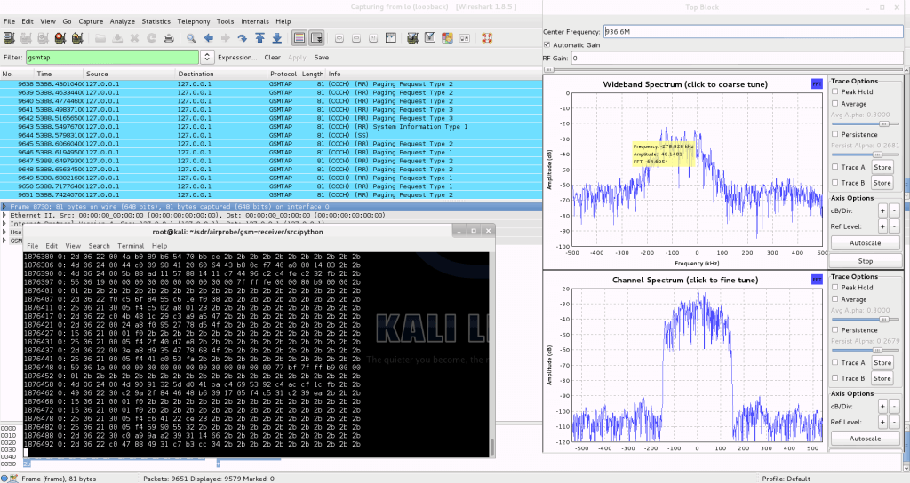

Project Overview
The SDR Hardware Benchmark suite is a rigorous, automated testing framework designed to evaluate the true operational capabilities of Software Defined Radios (SDRs) under high-stress aerospace and IoT communication loads. It measures critical metrics like throughput, latency, zero-copy buffer efficiency, and sustained sample-drop ratios.

High-Resolution Waterfall

Peak Spectrum Analysis

Real-Time Packet Decode
Methodology
- Load Testing: Injects high-bandwidth artificial noise and complex modulated signals to test the maximum USB/PCIe bus throughput of RTL-SDR, HackRF, PlutoSDR, LimeSDR, and USRP hardware.
- Signal Integrity: Evaluates Signal-to-Noise Ratio (SNR) and Error Vector Magnitude (EVM) degradation over time as device temperatures rise during extended operation.
- Compute Profiling: Integrates with
perfandnvtopto measure the CPU and GPU processing overhead required to acquire and format the raw IQ bitstreams before DSP begins.
Impact
By publishing unbiased, reproducible benchmark data, this project helps researchers and engineers select the appropriate RF hardware for their specific latency and bandwidth constraints, preventing critical dropouts during high-stakes satellite passes or dense IoT deployments.